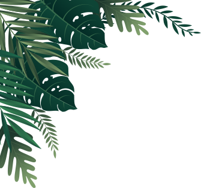
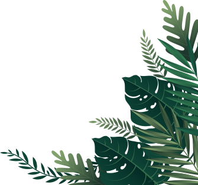

สมุนไพรไทยทั้ง 22 ชนิด
กำลังเสี่ยงสูญพันธุ์!!!
สธ.ประกาศรายชื่อ “สมุนไพรไทย” 22 ชนิดเสี่ยงสูญพันธุ์
เหตุเติบโตช้า เมื่อใช้ต้องใช้ทั้งต้น, ทั้งรากหรือมีการใช้บ่อย
นายนันทศักดิ์ โชติชนะเดชาวงศ์ ผู้อำนวยการกองคุ้มครองภูมิปัญญา
การแพทย์แผนไทยและพื้นบ้านไทย กรมพัฒนาการแพทย์แผนไทยและ
การแพทย์ทางเลือก กระทรวงสาธารณสุขกล่าวว่า ขณะนี้มีสมุนไพรไทย
22 ชนิด ที่เสี่ยงอาจจะสูญพันธุ์ได้
คณะกรรมการคุ้มครองและส่งเสริมภูมิปัญญาการแพทย์แผนไทยได้
ประชุมหารือกัน โดยเลือกสมุนไพร 6 ชนิดจาก 22 ชนิดขึ้นมาคือ ถั่วดิน-
โคกหรือพิษนาศน์ เทพทาโร มะตูมนิ่ม มะหาด เร่วและหัวร้อยรู นอกจาก
นี้ยังเสนอสมุนไพร “กระวาน” ขึ้นมาเป็นพิเศษด้วยอีกชนิดหนึ่ง โดยหาก
ใครมีสมุนไพร 7 ตัวนี้อยู่ในครอบครองไม่ได้ถือว่ามีความผิด เพียงแต่ต้อง
แจ้งมาทางสธ. ให้รับทราบว่ามีอยู่เท่าใด เพื่อที่จะจัดทำแผนส่งเสริมการ
ปลูกต่อไป เช่น บริษัทใดมีสมุนไพร 7 นี้อยู่ ใช้ผลิตยาไปเท่าใด ต้องมี
การปลูกทดแทนเท่าใด เพื่อไม่ให้สูญพันธุ์ เป็นต้น
รายชื่อสมุนไพรทั้ง 22 ชนิด
 เว็บไซส์อ้างอิงข้อมูล
https://mgronline.com/qol/detail/9600000005955
เว็บไซส์อ้างอิงรูปภาพ
https://pixabay.com
https://www.matichon.co.th/local/news_432630
รายละเอียดเพิ่มเติม
https://web.facebook.com/dtam.moph?_rdc=1&_rdr
https://www.dtam.moph.go.th/index.php/th/